2.4. Biclustering¶
Biclustering can be performed with the module
sklearn.cluster.bicluster. Biclustering algorithms simultaneously
cluster rows and columns of a data matrix. These clusters of rows and
columns are known as biclusters. Each determines a submatrix of the
original data matrix with some desired properties.
For instance, given a matrix of shape (10, 10), one possible bicluster
with three rows and two columns induces a submatrix of shape (3, 2):
>>> import numpy as np
>>> data = np.arange(100).reshape(10, 10)
>>> rows = np.array([0, 2, 3])[:, np.newaxis]
>>> columns = np.array([1, 2])
>>> data[rows, columns]
array([[ 1, 2],
[21, 22],
[31, 32]])
For visualization purposes, given a bicluster, the rows and columns of the data matrix may be rearranged to make the bicluster contiguous.
Algorithms differ in how they define biclusters. Some of the common types include:
constant values, constant rows, or constant columns
unusually high or low values
submatrices with low variance
correlated rows or columns
Algorithms also differ in how rows and columns may be assigned to biclusters, which leads to different bicluster structures. Block diagonal or checkerboard structures occur when rows and columns are divided into partitions.
If each row and each column belongs to exactly one bicluster, then rearranging the rows and columns of the data matrix reveals the biclusters on the diagonal. Here is an example of this structure where biclusters have higher average values than the other rows and columns:

An example of biclusters formed by partitioning rows and columns.¶
In the checkerboard case, each row belongs to all column clusters, and each column belongs to all row clusters. Here is an example of this structure where the variance of the values within each bicluster is small:
{kind=link}
After fitting a model, row and column cluster membership can be found
in the rows_ and columns_ attributes. rows_[i] is a binary vector
with nonzero entries corresponding to rows that belong to bicluster
i. Similarly, columns_[i] indicates which columns belong to
bicluster i.
Some models also have row_labels_ and column_labels_ attributes.
These models partition the rows and columns, such as in the block
diagonal and checkerboard bicluster structures.
Note
Biclustering has many other names in different fields including co-clustering, two-mode clustering, two-way clustering, block clustering, coupled two-way clustering, etc. The names of some algorithms, such as the Spectral Co-Clustering algorithm, reflect these alternate names.
2.4.1. Spectral Co-Clustering¶
The SpectralCoclustering algorithm finds biclusters with
values higher than those in the corresponding other rows and columns.
Each row and each column belongs to exactly one bicluster, so
rearranging the rows and columns to make partitions contiguous reveals
these high values along the diagonal:
Note
The algorithm treats the input data matrix as a bipartite graph: the rows and columns of the matrix correspond to the two sets of vertices, and each entry corresponds to an edge between a row and a column. The algorithm approximates the normalized cut of this graph to find heavy subgraphs.
2.4.1.1. Mathematical formulation¶
An approximate solution to the optimal normalized cut may be found via the generalized eigenvalue decomposition of the Laplacian of the graph. Usually this would mean working directly with the Laplacian matrix. If the original data matrix 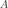 has shape 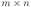, the Laplacian matrix for the corresponding bipartite graph has shape 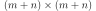. However, in this case it is possible to work directly with , which is smaller and more efficient.
The input matrix is preprocessed as follows:
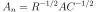
Where 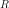 is the diagonal matrix with entry 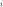 equal to
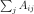 and 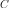 is the diagonal matrix with
entry  equal to 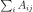.
equal to 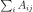.
The singular value decomposition, 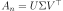, provides the partitions of the rows and columns of . A subset of the left singular vectors gives the row partitions, and a subset of the right singular vectors gives the column partitions.
The 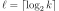 singular vectors, starting from the second, provide the desired partitioning information. They are used to form the matrix 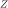:
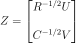
where the columns of  are 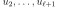, and similarly for
are 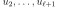, and similarly for  .
.
Then the rows of are clustered using k-means. The first n_rows labels provide the row partitioning,
and the remaining n_columns labels provide the column partitioning.
Examples:
A demo of the Spectral Co-Clustering algorithm: A simple example showing how to generate a data matrix with biclusters and apply this method to it.
Biclustering documents with the Spectral Co-clustering algorithm: An example of finding biclusters in the twenty newsgroup dataset.
References:
Dhillon, Inderjit S, 2001. Co-clustering documents and words using bipartite spectral graph partitioning.
2.4.2. Spectral Biclustering¶
The SpectralBiclustering algorithm assumes that the input
data matrix has a hidden checkerboard structure. The rows and columns
of a matrix with this structure may be partitioned so that the entries
of any bicluster in the Cartesian product of row clusters and column
clusters are approximately constant. For instance, if there are two
row partitions and three column partitions, each row will belong to
three biclusters, and each column will belong to two biclusters.
The algorithm partitions the rows and columns of a matrix so that a corresponding blockwise-constant checkerboard matrix provides a good approximation to the original matrix.
2.4.2.1. Mathematical formulation¶
The input matrix is first normalized to make the checkerboard pattern more obvious. There are three possible methods:
Independent row and column normalization, as in Spectral Co-Clustering. This method makes the rows sum to a constant and the columns sum to a different constant.
Bistochastization: repeated row and column normalization until convergence. This method makes both rows and columns sum to the same constant.
Log normalization: the log of the data matrix is computed: 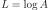. Then the column mean 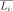, row mean 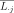, and overall mean 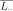 of 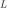 are computed. The final matrix is computed according to the formula
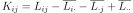
After normalizing, the first few singular vectors are computed, just as in the Spectral Co-Clustering algorithm.
If log normalization was used, all the singular vectors are meaningful. However, if independent normalization or bistochastization were used, the first singular vectors, 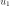 and 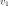. are discarded. From now on, the “first” singular vectors refers to and 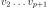 except in the case of log normalization.
Given these singular vectors, they are ranked according to which can be best approximated by a piecewise-constant vector. The approximations for each vector are found using one-dimensional k-means and scored using the Euclidean distance. Some subset of the best left and right singular vector are selected. Next, the data is projected to this best subset of singular vectors and clustered.
For instance, if  singular vectors were calculated, the
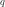 best are found as described, where 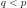. Let
be the matrix with columns the best left singular
vectors, and similarly for the right. To partition the rows,
the rows of are projected to a dimensional space:
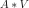. Treating the 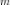 rows of this
matrix as samples and clustering using k-means yields the row labels.
Similarly, projecting the columns to 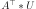 and
clustering this 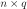 matrix yields the column labels.
singular vectors were calculated, the
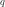 best are found as described, where 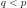. Let
be the matrix with columns the best left singular
vectors, and similarly for the right. To partition the rows,
the rows of are projected to a dimensional space:
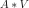. Treating the 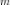 rows of this
matrix as samples and clustering using k-means yields the row labels.
Similarly, projecting the columns to 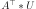 and
clustering this 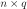 matrix yields the column labels.
Examples:
A demo of the Spectral Biclustering algorithm: a simple example showing how to generate a checkerboard matrix and bicluster it.
References:
Kluger, Yuval, et. al., 2003. Spectral biclustering of microarray data: coclustering genes and conditions.
2.4.3. Biclustering evaluation¶
There are two ways of evaluating a biclustering result: internal and external. Internal measures, such as cluster stability, rely only on the data and the result themselves. Currently there are no internal bicluster measures in scikit-learn. External measures refer to an external source of information, such as the true solution. When working with real data the true solution is usually unknown, but biclustering artificial data may be useful for evaluating algorithms precisely because the true solution is known.
To compare a set of found biclusters to the set of true biclusters, two similarity measures are needed: a similarity measure for individual biclusters, and a way to combine these individual similarities into an overall score.
To compare individual biclusters, several measures have been used. For now, only the Jaccard index is implemented:
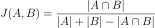
where and 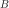 are biclusters, 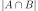 is the number of elements in their intersection. The Jaccard index achieves its minimum of 0 when the biclusters to not overlap at all and its maximum of 1 when they are identical.
Several methods have been developed to compare two sets of biclusters.
For now, only consensus_score (Hochreiter et. al., 2010) is
available:
Compute bicluster similarities for pairs of biclusters, one in each set, using the Jaccard index or a similar measure.
Assign biclusters from one set to another in a one-to-one fashion to maximize the sum of their similarities. This step is performed using the Hungarian algorithm.
The final sum of similarities is divided by the size of the larger set.
The minimum consensus score, 0, occurs when all pairs of biclusters are totally dissimilar. The maximum score, 1, occurs when both sets are identical.
References:
Hochreiter, Bodenhofer, et. al., 2010. FABIA: factor analysis for bicluster acquisition.